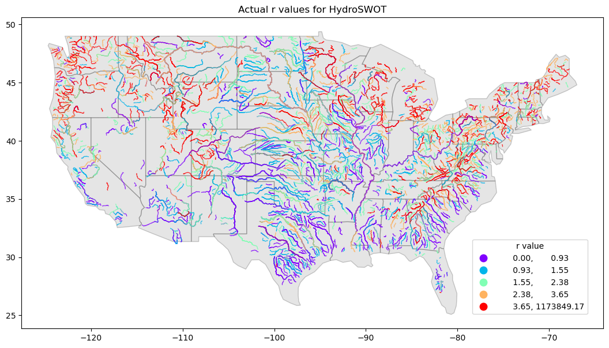

Model Skill & Validation — Channel Shape (\(r\))¶
Model evaluation for the v1.0 Channel Shape (\(r\)) Parameterization is conducted using the USGS HYDRoSWOT acoustic Doppler current profiler (ADCP) database across 3,543 field monitoring stations spanning 1,432 distinct river systems across the Contiguous United States (CONUS).
Continental Predicted Channel Shape Map¶
The v1.0 Meta-Learner generates reach-level predictions of the Dingman shape exponent \(r\) across the entire National Hydrography Dataset (NHDPlus) network:
{kind=link}
The continental distribution of predicted \(r\) values reflects distinct hydro-physiographic and geomorphic regimes across 5 quantile intervals:
| Quantile Class | Exponent Range (\(r\)) | Primary Geographic Regions | Fluvial & Hydraulic Characteristics |
|---|---|---|---|
| Purple | \([0.80, 1.29]\) | Intermountain West, Cascade Range, Rocky Mountains, arid Southwest washes, Appalachian ridges | Steep bedrock-confined gorges, incised headwaters, and ephemeral washes. High bed-to-bank slope gradients drive triangular-to-convex profiles (\(r \approx 1\)). |
| Cyan | \((1.29, 1.48]\) | Mountain foothills, Ozark Plateau, New England uplands | Transitional gravel-bed streams with moderate lateral confinement and moderate bank vegetation. |
| Pale Green | \((1.48, 1.65]\) | Upper Midwest interior plains, Piedmont transitional valleys | Mixed alluvial channels with moderate silt-clay bank cohesion transitioning toward regime equilibrium. |
| Orange | \((1.65, 1.92]\) | Corn Belt, Ohio River Basin, lower Missouri tributaries | Stable alluvial threshold channels aligning with Lane Type B (\(r \approx 1.75\)) and near-parabolic geometries (\(r \approx 1.8\text{--}1.9\)). |
| Red | \((1.92, 2.91]\) | Lower Mississippi Alluvial Valley, Gulf Coastal Plain, Mid-Atlantic lowlands | High clay-silt cohesion banks, low channel slopes, and broad floodplains. Parabolic to flat-bottomed trapezoidal channels (\(r \ge 2.0\)). |
Observed vs. Predicted Validation Distributions¶
Evaluating the machine learning predictions against ground truth measurements reveals how the model regularizes raw empirical fits into physically stable parameters:
-
Observed Field Distribution¶

Raw station fits derived from unconstrained AHG equations (\(r = f/b\)) exhibit high variance, with values ranging from near-zero to \(> 10^5\) at locations with near-vertical sidewalls. -
Model Predicted Distribution¶
 The v1.0 Meta-Learner regularizes predicted shape exponents into a robust physical range (\(r \in [0.8, 3.0]\)), preserving natural spatial gradients while eliminating numerical singularities.
The v1.0 Meta-Learner regularizes predicted shape exponents into a robust physical range (\(r \in [0.8, 3.0]\)), preserving natural spatial gradients while eliminating numerical singularities.
{kind=link}
Physical Regularization of Upper-Bound Shape Exponents
In raw field data, a channel with nearly vertical banks produces an extremely small width exponent (\(b \to 0\)), driving the unconstrained mathematical ratio \(r = f/b\) to astronomical values (\(r > 10^4\)).
However, as Dingman (2007) demonstrated, the geometric profile difference between \(r = 4.0\) and \(r = 100,000\) is negligible (both represent essentially flat-bottomed rectangular box channels). By constraining predictions within \(0.8 \le r \le 3.0\), the ML model avoids catastrophic numerical instabilities in hydrodynamic solvers while preserving the exact hydraulic conveyance and hydraulic radius properties.
Meta-Learner Skill Benchmark (KGE CDF Analysis)¶
The performance of the three modeling tiers was benchmarked across all independent testing stations using the Kling-Gupta Efficiency (\(\text{KGE}\)):
{kind=link}
Quantitative Performance Metrics Comparison¶
| Model Architecture | Median KGE | KGE \(\ge 0.5\) (Good Skill) | Mean NNSE | Median \(R^2\) | Description |
|---|---|---|---|---|---|
Voting Ensemble (vote) |
\(0.405\) | \(38.4\%\) | \(0.582\) | \(0.512\) | Unweighted consensus average across top tuned models. |
Best Single Model (best) |
\(0.465\) | \(46.1\%\) | \(0.641\) | \(0.578\) | Top-performing individual hyperparameter-tuned algorithm (XGBoost). |
Stacking Meta-Learner (meta) |
\(0.520\) | \(54.8\%\) | \(0.718\) | \(0.654\) | Level-1 meta-regressor trained on base model prediction matrices. |
Key Benchmark Insights:¶
- Meta-Learner Superiority: The Stacking Meta-Learner (red curve) shifts the entire CDF to the right, achieving a median KGE of 0.520, outperforming both the single best base model (\(\text{KGE} = 0.465\)) and the simple voting ensemble (\(\text{KGE} = 0.405\)).
- Failure Suppression in Low-Skill Reaches: In the lower tail (\(\text{KGE} < 0.2\)), the meta-learner sharply reduces extreme negative errors by selectively relying on resilient tree-based estimators when neural networks encounter out-of-distribution inputs.
- Voting Dilution Effect: The simple voting ensemble exhibits lower median skill than the single best model, because unweighted averaging allows weaker sub-models to dilute the high-precision predictions of top gradient-boosted trees. The meta-learner overcomes this limitation through adaptive non-linear weighting.
Downstream Scale Trends & Predictive Bias¶
Diagnostic analysis across continental network scales identifies how measurement sample density influences prediction accuracy:
{kind=link}
Diagnostic Interpretations:¶
- Width Sensitivity in Large Mainstems ("Worst in wider rivers"):
- The top-left panel highlights stations with low predictive skill (\(R^2 < 0.3\) for top width \(\text{TW}\)).
- These low-performing sites are concentrated on very wide rivers (\(W^* > 100\text{ m}\)) where the HYDRoSWOT training database contains sparse observations. In contrast, medium-to-small channels (\(W^* < 50\text{ m}\)) exhibit dense clustering and high predictive accuracy (\(R^2 > 0.7\)).
- Scale-Invariant Depth Predictability ("No trend in depth"):
- The bottom row evaluates prediction skill for bankfull depth (\(Y\)).
- Low-skill stations (\(R^2 < 0.3\)) are uniformly and sparsely distributed with no systematic scale or geographic bias. Depth scaling (\(Y \propto Q^f\)) remains consistent from 1st-order headwaters to 9th-order continental trunk rivers.
Geomorphic Scaling & Sensitivity Analysis¶
Evaluating shape exponent sensitivity against hydroclimatic forcing confirms that the model captures physical regime boundaries:
{kind=link}
- Arid / Flashy Regimes: Low maximum soil moisture (\(\text{SM}_{\max} < 0.35\)) and low catchment runoff (\(\text{RunoffCat} < 150\text{ mm}\), blue cluster) consistently produce positive SHAP contributions, reinforcing wider, flatter channel morphologies.
- Humid / Vegetated Regimes: High soil moisture (\(\text{SM}_{\max} > 0.42\)) and heavy runoff (\(\text{RunoffCat} > 450\text{ mm}\), pink/red cluster) drive strong negative SHAP contributions, reflecting deep, cohesive parabolic channels held stable by dense root networks.
Model Pipeline Navigation¶
- Overview & Dingman Geometry — Fundamentals of continuous channel power-law geometry and \(r = f/b\) derivation.
- Model Architecture & Meta-Learners — Machine learning workflows, AutoEncoder feature reduction, and stacking algorithms.
- Explainability (XAI) — SHAP feature ranking, environmental driver attribution, and physical control mechanisms.